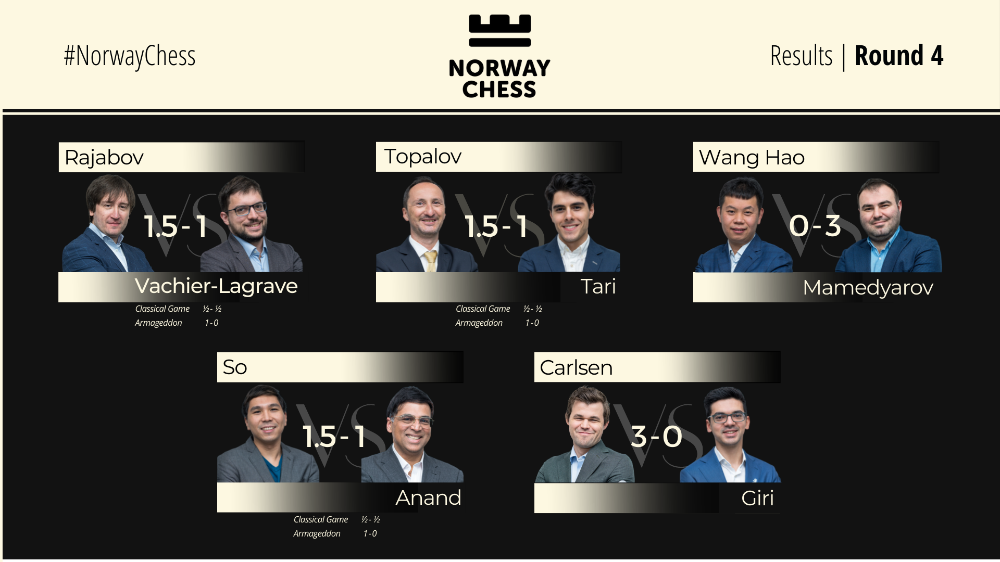

Norway Chess 2022 is the last major event before the 2022 Candidates Tournament, which determines the world championship challenger. This year's 10-player field features the world champion as well as two former world champions, one player from the Candidates, and five former candidates.
The event begins with a separate blitz tournament on May 30, while the main classical tournament runs from the first round on May 31 to the ninth and final round on June 10. Every round produces a winner; drawn games in the classical portion are replayed as an armageddon game.

FORMAT
The 2022 tournament is a 10-player, nine-round single round-robin.
The signature scoring system of Norway Chess returns in 2022. Winners receive three points instead of the usual one. If the game is drawn, however, the competitors play an armageddon game, the winner of which scores 1.5 points for the round and the loser one point.
The time control in the standard games is 120 minutes for the game with a 10-second increment after move 40. In the armageddon game, White gets 10 minutes and Black gets seven, with a one-second increment after move 41.
PLAYERS
- GM Magnus Carlsen
- GM Wesley So
- GM Shakhriyar Mamedyarov
- GM Anish Giri
- GM Teimour Radjabov
- GM Viswanathan Anand
- GM Maxime Vachier-Lagrave
- GM Veselin Topalov
- GM Wang Hao
- GM Aryan Tari
Indian ace Viswanathan Anand returned to winning ways, upstaging world No.1 Magnus Carlsen in the fifth round of the Classical section early on Monday in the Norway Chess tournament to climb to the top spot.
After defeating the Norwegian superstar in the Blitz event that preceded the Classical section, Anand claimed the victory in a thrilling Armageddon (sudden death game) after the regular match ended in a 40-move draw.
In the Armageddon, the 52-year old Anand recreated magic of old when he stunned Carlsen to post a win in 50 moves.
Anand had started the Classical section with three straight wins, beating Maxime Vachier-Lagrave (France), Veselin Topalov (Bulgaria) and Hao Wang (China) before American Wesley So ended his streak in the fourth round. Carlsen lies in the second spot with 9.5 points despite the loss to his long-time rival.
So, who won the Blitz section earlier, shares third place with Shakhriyar Mamedyarov (Azerbaijan) on 8.5 points.
In the fifth round, So went down to Mamedyarov via Armageddon. There were wins for Anish Giri (the Netherlands) and Norway's Aryan Tari over Teimour Radjabov (Azerbaijan) and Hao Wang respectively in the fifth round.
Frenchman Maxime Vachier-Lagrave won the sudden death game against veteran Veselin Topalov (Bulgaria) in the other match to improve his score to 7 points. In the ongoing Norway Chess tournament, the players take part in an Armageddon (sudden death) in case of a draw in the classical game.